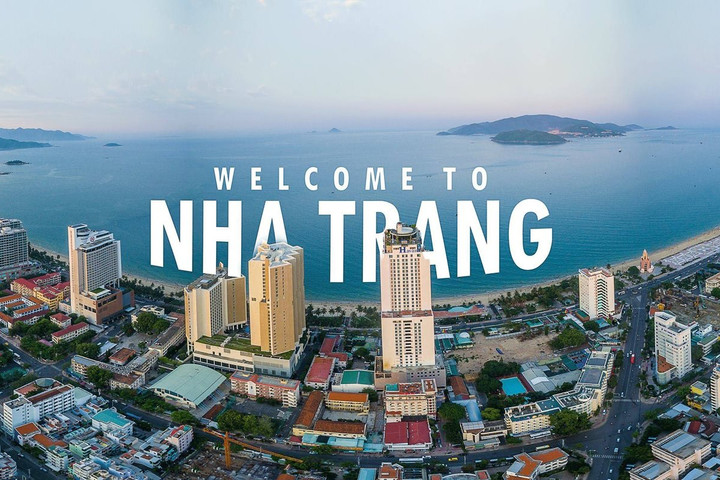

HELLO, IT'S NICE TO MEET YOU

Khánh Hòa là một tỉnh ven biển thuộc duyên hải Nam Trung Bộ, Việt Nam.Là một tỉnh nằm sát dãy núi Trường Sơn, đa số diện tích Khánh Hòa là núi non, miền đồng bằng rất hẹp.
Phía Bắc và Tây Bắc tỉnh có vùng núi cao thuộc dãy Vọng Phu cao hơn 1000 m, trong đó có dãy Tam Phong gồm ba đỉnh núi cao là Hòn Giữ (cao 1264 m),
Hòn Ngang (1128 m) và Hòn Giúp (1127 m). Dãy Vọng Phu - Tam Phong có hướng tây nam - đông bắc,
kéo dài trên 60 km, tạo thành ranh giới tự nhiên giữa hai tỉnh Khánh Hòa, Phú Yên, Đắk Lắk.
Khánh Hòa là địa danh thu hút nhiều du khách với những khu di tích chiến khu, căn cứ cách mạng. Ngoài ra, tỉnh cũng đầu tư chú trọng đến văn nghệ và nghệ thuật để phục
vụ người dân và thu hút du khách;
các đội chiếu bóng phục vụ ở những nơi hẻo lánh, miền núi hiểm trở.
Hiện nay, tỉnh Khánh Hòa còn lưu giữ được khá nhiều lễ hội mang đậm nét văn hóa bản địa, tục thờ cúng trong tín ngưỡng dân gian. Các lễ hội đều xuất phát từ lao động, từ phong tục tập quán,
là nếp sinh hoạt văn hóa tinh thần của người dân.
Là một tỉnh ven biển có nhiều làng chài nên phong cách ẩm thực ở Khánh Hòa chịu ảnh hưởng sâu sắc từ biển, với nguyên liệu chủ yếu được chế biến từ hải sản.
Đồng thời cư dân Khánh Hòa xưa chủ yếu di cư vào từ các tỉnh Bình Định, Phú Yên,
Quảng Nam và Quảng Ngãi nên phong cách ẩm thực cũng chịu ảnh hưởng sâu sắc từ các tỉnh trên.
Các món đặc sản của Khánh hòa được nhiều người biết đến như nem Ninh Hòa, bún cá Nha Trang,bún sứa, bánh ướt Diên Khánh...
Ngoài ra dưới sự ảnh hưởng của người Hoa (sinh sống đông đúc gần khu vực chợ Đầm phường Xương Huân), người Pháp (từng đến Nha Trang nghỉ dưỡng rất đông thời Pháp thuộc) và những người miền Bắc di cư vào Nam sau năm 1954 tạo cho Nha Trang phong cách ẩm
thực đặc biệt khác hẳn với các địa phương khác trong tỉnh và khu vực Nam Trung Bộ tiêu biểu là những món ăn như phở Nha Trang, bánh mì Nha Trang, bò nướng Lạc Cảnh...
Chỉ cần một lần đặt chân đến mảnh đất Khánh Hòa, mọi du khách đều sẽ bị mê hoặc bởi thiên nhiên núi rừng hùng vĩ, con người thân thiện và nhiều món ăn hấp dẫn.
Và điều mà nhiều du khách cảm thấy tò mò nhất chắc hẳn là đặc sản Khánh Hòa phải không nào? Vậy vùng đất này có những món ăn nào có thể khiến du khách hấp dẫn đến như vậy!
Hãy để VN Foods giúp bạn hiểu hơn về văn hoá ẩm thực nơi đây nhé!